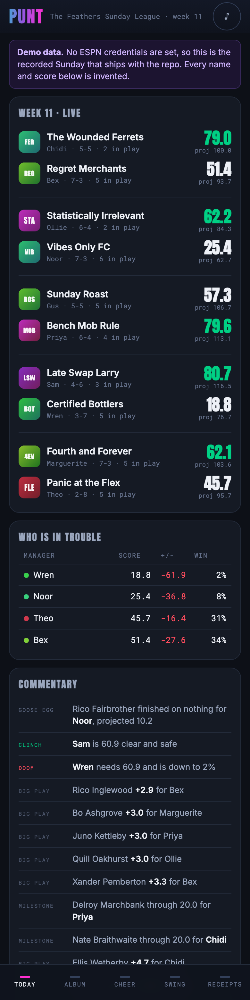
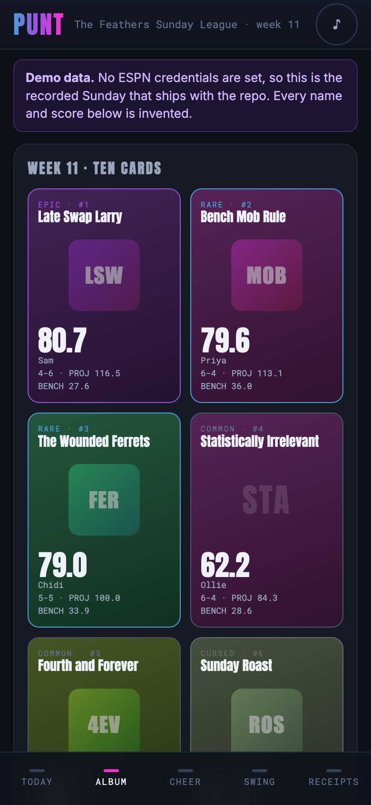
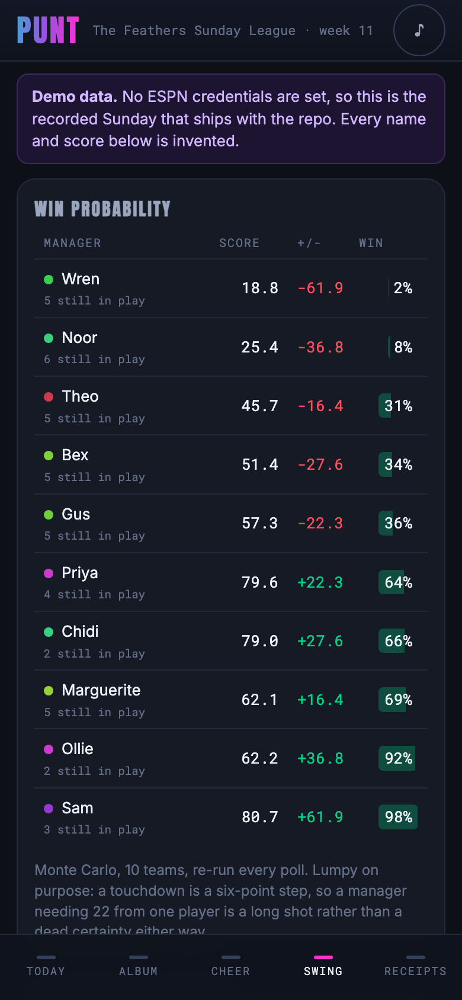
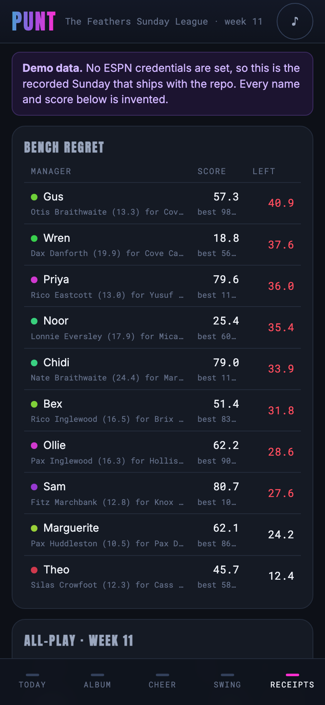
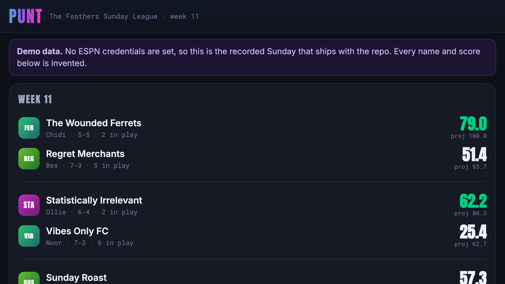

Play-by-play, uproar, numbers and trash-talk: a fantasy football companion built for a bar, not a spreadsheet.
| 🌐 Website | marcdeller.com | ✉️ Contact | marc@marcdeller.com | 🐙 GitHub | bellcheddar/PUNT |

The ESPN app is a spreadsheet with a logo. PUNT is the opposite: a mobile-first companion for a ten-team bar league that exists to make a Sunday afternoon louder. It reads the same undocumented ESPN fantasy API the app does, turns polling into discrete Moments, and renders them as a sticker album of collectible manager cards with horns, commentary and a bar-screen mode. Lineups are still set in ESPN; PUNT is read-only.
Why it matters: the numbers that make fantasy football funny (points left on the bench, a one-in-twenty comeback, a starter who finished on zero) are all computable and none of them are shown by the official app, which is optimised for a manager alone on a sofa rather than for ten people in a room. Every design decision here resolves in favour of the room: audio on unless muted, no settings screen, no accounts, one URL. It is useful for anyone running a private ESPN league who wants a shared screen worth looking at: a commissioner setting up a weekly ritual, a league that already has a group chat full of receipts, or anyone who wants a worked example of consuming ESPN's undocumented fantasy endpoints without a browser extension.
| The album | The swing | The receipts |
|---|---|---|
 |
 |
 |

Everything above is the synthetic Sunday that ships with the repository. No real athlete, franchise or person appears in it.
Polls produce state. Nobody cheers at "Dax Ashgrove now has 18.4 points". engine/ turns consecutive polls into Moments, which is what the audio, the commentary and the cards all consume.
python3 tools/timeline.py # the whole Sunday, moment by moment
python3 tools/timeline.py --kinds DOOM,BENCH_DISASTER
python3 tools/timeline.py --summary
The demo Sunday produces 241 Moments across 10.9 hours:
16:10 DOOM 0.85 Wren 2.1% with 59.1 to find
16:30 CLINCH 0.75 Sam 61.9 up, 98% safe
17:05 BENCH_DISASTER 0.76 Priya Delroy Marchbank (21.4) benched, Ash Greenhalgh (0.0) in the FLEX
18:32 LEAD_CHANGE 0.78 Noor in front by 1.2
19:02 BENCH_DISASTER 0.92 Priya Wilder Braithwaite (41.2) benched, Yusuf Marchbank (9.9) in the WR
19:05 GOOSE_EGG 0.70 Gus Silas Stonebridge finished on nothing, projected 11.5
22:01 LEAD_CHANGE 0.52 Bex in front by 1.6
Three properties are design constraints rather than niceties:
BENCH_DISASTER is invisible in the score, so it has its own detection path off the optimal lineup rather than falling out of a points delta.Bench regret is the optimal legal lineup minus what was actually started, and everything else on the Receipts tab depends on it. Taking the highest scorer first does not work: it can consume the only FLEX seat and strand two running backs who between them were worth more. It is a maximum-weight bipartite matching, solved by processing players in descending order of points and adding each with an augmenting path. That is exact rather than heuristic (the seatable sets form a transversal matroid, and greedy is optimal on a matroid), and it needs no dependency. It is checked against an exhaustive oracle on thirty random rosters and against an independent bitmask DP on every team in the fixture.
The swaps it names have to be legal, not merely arithmetically suggestive. The first version sorted the worst starters and the best bench players and zipped them, which produced "you should have started your backup quarterback instead of your running back" -- impossible, and the commentary would have said it out loud.
Monte Carlo, re-run every poll, seeded from the matchup and the current scores so two identical polls return an identical number (a probability that flickers by a point every thirty seconds is indistinguishable, to somebody watching, from something happening).
Simulation rather than a closed form because the tails are what the product uses. Fantasy scoring is lumpy -- a touchdown is a six-point step -- so a manager needing 22 points from a player projected for 8 is a long shot rather than a zero. A normal approximation puts almost no weight there, which would make the Legendary card (a win from under 10%) impossible to mint and would fire DOOM far too early.
A fresh clone runs the whole app with no ESPN account, no cookies and no configuration. It falls back to a recorded Sunday committed to the repository, and says so in a banner on every page.
git clone https://github.com/bellcheddar/PUNT.git
cd PUNT
python3 -m venv .venv && source .venv/bin/activate
pip install -r requirements.txt
python3 -m app # http://127.0.0.1:8009
Watch a whole recorded Sunday go past in the terminal instead:
python3 tools/replay_check.py --speed 1800 # ten hours in twenty seconds
python3 tools/replay_check.py --once # just the final scores
python3 tools/replay_check.py --list # what recordings are available
To point it at a real league, copy .env.example to .env and fill in LEAGUE_ID, ESPN_S2 and ESPN_SWID. Both cookies come from a browser logged into ESPN (devtools, Application, Cookies, espn.com); SWID includes its braces. They rotate every few months, and when they do the app keeps serving cached data behind a commissioner banner rather than breaking.
| Layer | Choice | Why |
|---|---|---|
| Backend | Flask, blueprint per surface | Matches the conventions of the other apps on the same box |
| Templating | Jinja2, server-rendered | First paint is HTML, no hydration cost on a phone |
| Liveness | htmx polling (30 s) plus SSE for instant events | No front-end framework, no build step |
| Audio | Howler.js over Web Audio (Phase 4) | Sprites, mobile unlock handling, per-bus volume |
| Animation | CSS transforms and Web Animations API | GPU-composited only: transform and opacity, never top/width |
| Text | Deterministic phrase bank, plus a small local model weekly (Phase 4/5) | A model in the live path is both too slow and able to invent a score |
| Cache | In-process TTL cache with single-flight | Ten phones must produce one upstream poll, not ten |
No React, no Vue, no npm, no build step. Total JS payload is htmx at 16 kB gzipped, vendored rather than pulled from a CDN because the target environment is a bar's shared wifi.
PUNT/
├── app.py # factory, blueprint registration
├── config.py # env-driven config, plus the startup secret audit
├── espn/
│ ├── feeds.py # every endpoint, view name and TTL, in one table
│ ├── client.py # cookie auth, backoff, LeagueRepository
│ ├── cache.py # TTL cache with single-flight
│ ├── models.py # total parsers: Team, Player, Matchup, GameState
│ └── replay.py # recorder and replay transport
├── engine/ # Phase 2: events, scoring, simulation, commentary
├── data/
│ ├── phrases/ # Phase 4: YAML phrase banks
│ └── recordings/ # captured payloads; the demo Sunday is committed
├── static/ # css, vendored js, audio (Phase 4)
├── templates/ # base, tabs/, partials/
├── views/ # blueprints, split by response kind
├── tools/ # make_fixture, replay_check, screenshot
└── tests/
views/ is split by response kind (pages, htmx partials, JSON, media, admin) rather than by tab, because caching, error handling and degradation differ per kind and not per tab: a broken partial swaps in a stale banner, a broken page renders an empty state, and a broken API call returns a 200 with problems populated.
Cookies live server-side only. A browser cannot send them cross-origin, which is the whole reason this app has a server: the Flask process holds them and the ten phones hold nothing.
| Feed | Cache TTL | Purpose |
|---|---|---|
mSettings |
Season | Scoring items, playoff seeds, roster slots, the members block |
mTeam |
6 hours | Team names, abbreviations, uploaded logos, owner display names |
mSchedule |
1 hour | Season grid, for all-play, luck and simulations |
mMatchupScore + mBoxscore |
30 s | Per-slot player points and projected remainder |
mRoster |
5 min (30 s live) | Starters versus bench, the basis of bench regret |
kona_player_info |
15 min | Projections, injury flags, ownership |
| NFL scoreboard (public) | 20 s | Possession, down and distance, red zone, clock |
Three rules the whole layer is built around:
.problems rather than raising. ESPN changes payload shapes without notice, and a KeyError here takes down a whole request while a degraded Player takes down one row of one panel, which then says so.mTeam on every load, so a mid-season rename appears without a deploy. Card colours are hashed from the team id, so every phone agrees with no shared state and the colour survives a rename.Development happens on Tuesdays, when nothing is live. Without a replay harness nothing downstream of the fetch layer is testable at all: no event detection, no commentary, no audio timing, no pack rip. It is the first milestone for that reason.
RECORD=1 python3 -m app # capture a live Sunday
REPLAY=2025-11-16-134500 REPLAY_SPEED=60 python3 -m app # replay it at 60x
A recording is a directory of raw upstream payloads plus a manifest of when each arrived. ReplayTransport implements the same protocol as the live client, so every layer above it (the cache included) cannot tell the difference.
The committed fixture is synthetic, deliberately. A capture of a real Sunday is roughly 480 polls of a payload approaching a megabyte, and it carries ten real people's ESPN display names and account GUIDs. This is a public repository. tools/make_fixture.py instead generates a seeded, invented ten-team Sunday containing one of every event the engine has to detect: a planted bench disaster (41.2 points benched in favour of a starter who managed 1.4), a goose egg, a manager mathematically out of it by mid-afternoon, and a Sunday-night lead change. That is what the Phase 2 tests assert against, rather than hoping a real week happened to contain them.
python3 tools/make_fixture.py # regenerate, seeded and byte-stable
python3 tools/make_fixture.py --check # verify the committed fixture is current
Everything is read from the environment and nowhere else, which is what makes the startup secret audit meaningful: if a cookie can only enter the process through config.py, there is exactly one place it can leak from. On boot, PUNT scans the public static tree for its own cookie values and refuses to start if it finds one.
| Variable | Default | Notes |
|---|---|---|
LEAGUE_ID |
— | The numeric id in the ESPN fantasy URL |
SEASON |
2025 |
|
ESPN_S2, ESPN_SWID |
— | Session cookies. Never committed, never logged, never rendered |
ROAST_LEVEL |
1 |
0 safe, 1 teasing, 2 savage. Applies to the phrase bank |
POLL_SECONDS |
30 |
30 is a floor and is enforced in code, not just documented |
RECORD |
0 |
Write every upstream response to data/recordings/ |
REPLAY, REPLAY_SPEED |
— | Replay a recording instead of going upstream |
ADMIN_TOKEN |
— | Required for POST /admin/refresh-cookies. Unset denies everything |
pip install -r requirements-dev.txt
python3 -m pytest # 120 tests, no network, no cookies
python3 tools/screenshot.py --check-overflow # needs the app running
Every test runs against the committed recording with sockets disabled by a fixture, so "replays with no network access" is an assertion rather than a claim. The Phase 1 gate is a single test: test_full_sunday_replays_at_60x_with_no_network_and_no_cookies.
The Phase 2 gate is a golden file: the whole Sunday's Moment timeline, regenerated on every run and compared byte for byte. Regenerate it deliberately with python3 -m tests.golden_regen and read the diff, because a change to detection that alters the afternoon is exactly the kind of thing somebody should have to look at.
Several tests are there because they caught something real:
-2.0 turnover in the fixture. Fantasy scores are not monotonic; the test was wrong and the fixture was right, and the event engine has to survive the same thing.The app is designed at 390 px before anything else exists, and ships as a PWA in Phase 3. The divergences that cost a day each if discovered late are documented in the build spec: iOS ignores most of manifest.json and needs the legacy meta tags, the ringer switch mutes HTML5 audio but not Web Audio, DeviceOrientationEvent.requestPermission() must be called from inside a user gesture, and 100vh changes mid-scroll on both platforms (use 100dvh).
Capturing screenshots at a phone width needs tools/screenshot.py rather than --window-size: Chrome's window has a 500 px platform minimum on macOS, so a 390 px capture is silently a crop of a 500 px layout. Everything looks broken and none of it is.
The same tool runs --check-overflow, which loads every route in a 390 px iframe and reports any element wider than the viewport. Horizontal overflow is the failure this project keeps producing and cannot see: a table column pushed past the right edge is simply not drawn, with no scrollbar and nothing to suggest it exists. It has happened twice, both times found by looking at a screenshot rather than by the code being read.
Roadmap for PUNT, in dependency order: each phase ends in something demonstrable, and no phase starts before its predecessor's acceptance criteria pass.
Acceptance: a full recorded Sunday replays at 60x speed with no network access and no cookies.
.problems rather than raisingAcceptance: replaying a recorded Sunday emits a plausible Moment timeline, and bench regret figures reconcile by hand against the ESPN box score for two known weeks.
engine/events.py. Poll diffing into nine kinds of Moment, idempotent across a restart via a hash of the play's own facts, magnitude-scaled, with BENCH_DISASTER on its own detection path. Three kinds of false firing were found and fixed by watching a whole Sunday go past: six lead changes in the opening eleven minutes when nobody had twenty points, a bench disaster re-firing because the starter in the worst swap changed while the benched player stood still, and CLINCH never firing at all because its condition required the clinching side to have finished tooengine/scoring.py. Exact optimal lineup by maximum-weight bipartite matching, bench regret, all-play and luck index. Checked against an exhaustive oracle and an independent bitmask DP, because a greedy bug shows up on the awkward roster nobody writes a fixture forengine/simulate.py. Monte Carlo win probability with a lumpy per-player distribution, so the tails the product actually uses (5% for DOOM, 10% for Legendary) carry real weightengine/live.py. One background poller feeding the event engine and fanning Moments out to every SSE listener. Detecting lazily inside a request would mean "whenever somebody's phone happens to ask", which is the twenty-five second lag the stream exists to removeAcceptance: 60 fps on a real iPhone and a mid-range Android with ten cards on screen, and the pack rip is genuinely satisfying.
transform only: no filters, no blend modes, both are frame-rate killers on mobile. iOS needs DeviceOrientationEvent.requestPermission() from inside a gestureAcceptance: a 60x replay produces a coherent audio track with no clipping, no overlap and no repeated line inside its cooldown, and the mute toggle works instantly on iOS.
(week, moment.id) so a Sunday replays identically in testsstatic/audio/LICENCES.md. Every asset gets a line: source URL and licence. No broadcast themes, no fight songs, no commercially released tracks, no orphan filesAcceptance: three consecutive weekly recaps generate with zero validator rejections reaching the user, and ?tv=1 is readable from twelve feet.
mSchedule grid is wired in, which is the same feed the playoff odds needAcceptance: pulling the network cable mid-Sunday degrades gracefully on every tab and recovers without a reload.
punt.mdeller.com. DNS already resolves to the droplet and nginx answers on port 80, but there is no vhost, no certificate and no service yet. Needs a port allocation, a systemd unit, an nginx vhost with the http2 patch, certbot, and an entry in the launcher.gitignore tracks only demo-*, on the assumption that ten managers' ESPN display names should not be in a public repository| Risk | Mitigation |
|---|---|
| ESPN changes hostnames or view names mid-season | Every endpoint in one module, per-panel degradation, stale banners |
espn_s2 expires on a Sunday |
Cached data continues serving, commissioner banner, admin refresh route |
| Audio silently fails on someone's phone | The visual path is always complete; nothing is audio-only |
| Commentary repetition kills the joke by week 3 | Cooldowns, a 400-line minimum, weighted sampling |
| Banter lands badly on a real person | ROAST_LEVEL, managers only and never players, lowerable mid-season |
| A recap invents a statistic | Numeral and proper-noun validator, templated fallback |
| Ten clients hammer ESPN | One shared cache, one upstream poll regardless of client count |
| A manager uploads a broken logo, or renames to 40 characters | Server-side image proxy, monogram fallback, truncation at the measured width |
MIT. See LICENSE.
PUNT is not affiliated with, endorsed by, or connected to ESPN or the National Football League. It reads ESPN's undocumented fantasy endpoints with a league member's own credentials, at a polling rate floored at 30 seconds, and is read-only.
Marc C. Deller, D.Phil.
Structural biologist & drug discovery scientist
| 🌐 | marcdeller.com | ✉️ | marc@marcdeller.com | 🐙 | github.com/bellcheddar/PUNT |